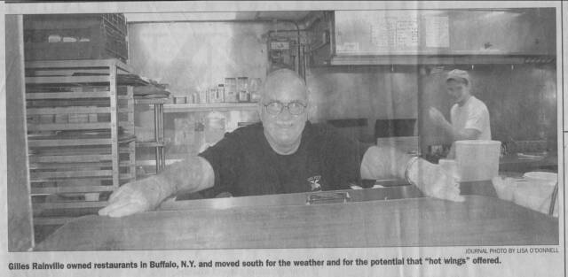
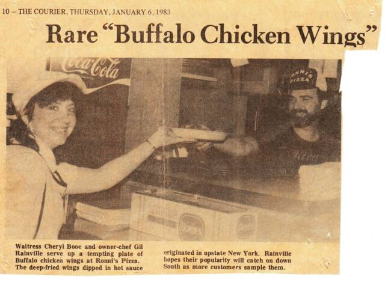
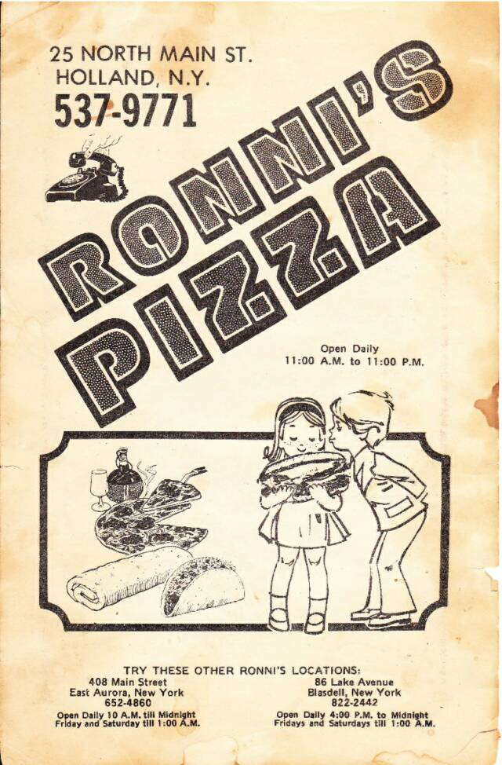
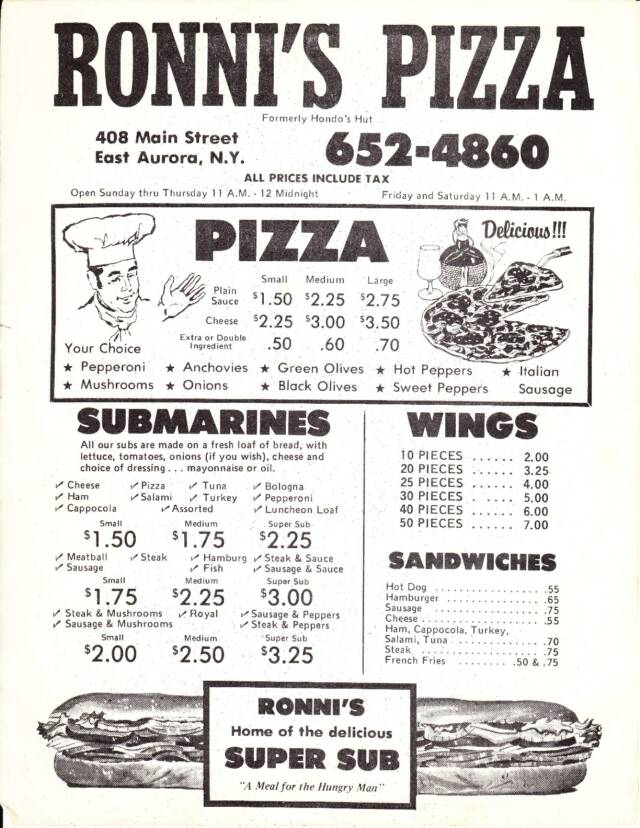

About Us
In 1982, Gilles Rainville purchased an old diner and named it Ronni's after his wife Veronica. At first, free samples of Buffalo wings had to be sent out for the customers to try. No one was familiar with them and didn't want to try them. It took about three years, but they eventually caught on!
While Ronni's has been in business in Clemmons, NC since 1982, Mr. Rainville had other Ronni's restaurants in New York. He and his wife moved to North Carolina for the weather. He thought that the area was fertile ground for Buffalo wings!
The Real Story
We did not create "Buffalo wings" and we certainly haven't forgotten how they got their start. So if you are unfamiliar with how they were "invented" just check out
"The Real Story"!
ffffI would like my customers to know the "real story" behind the buffalo chicken wings.
The Place was Frank and Teresa's Anchor Bar and resturant in Buffalo NY. It was a busy Friday night, back in 1964 and D. Belisimo was working behind the bar as he does today. His mother Teresa was in the kitchen cooking and his father was in the resturant greeting customers.
At about 11:30pm a hungry group of the Belisimo's friends entered the bar and sat down. he told them to wait until midnight so they could have what they wanted, and he served them another round of drinks. He told his mother to fix somethihng up for them.
By Midnight, the group was starving and his mother Teresa soon brought out two plates and laid them on the bar. Belisimo and his friends were curious as to what was on the plates and asked they were. Belisimo thought they looked like chicken wings but was afraid to say.
To make a long story short, yes, they were chicken wings his mother was about to throw in the stock pot for soup.
The rest is history! His mother Teresa created the chicken wings now served allover the country. Everywhere you go, when you mention chicken wings, you'll remeber mother Teresa, her wings and that famous night in Buffalo.
Thanks for your patronage
Giles Rainvile
Serving you since 1962



